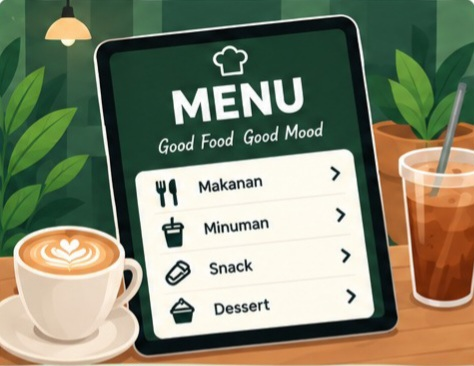

Menu Digital Restoran/Kafe
Website menu digital yang memudahkan pelanggan melihat pilihan makanan dan minuman.

Tentang Project
Project ini dibuat sebagai alternatif menu cetak. Pelanggan dapat melihat daftar makanan dan minuman melalui halaman website menggunakan HP atau komputer.
Fitur Project
- Daftar makanan dan minuman.
- Foto dan harga menu.
- Kategori makanan dan minuman.
- Informasi singkat setiap menu.
- Tampilan yang menyesuaikan ukuran layar.
Proses Pembuatan
HTML digunakan untuk menyusun daftar menu, sedangkan CSS digunakan untuk mengatur gambar, kartu menu, warna, dan tampilan agar mudah dibaca.
Informasi Project
Jenis: Website Menu Digital
Teknologi: HTML dan CSS
Status: Selesai